Simulation ▸ Setup ▸ Options opens the Simulation Options dialog. Its tabs follow the [OPTIONS] section of the .inp file, plus tabs for the Avaris engine, object defaults and 2D flooding.
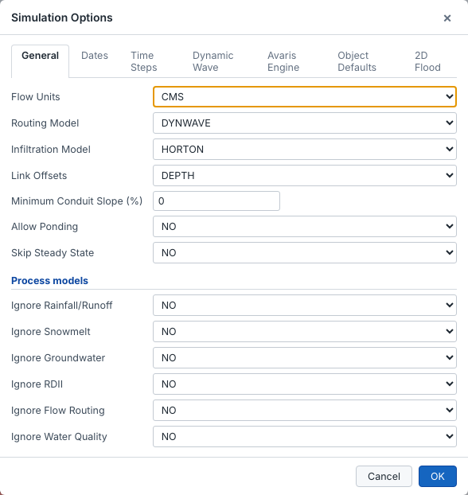
On this tab you set:
Set the start and end of the analysis, the start of reporting, the street-sweeping period and the antecedent dry days. Then set the reporting step, the wet-weather and dry-weather runoff steps, the routing step, the control rule step and the steady-state tolerances.
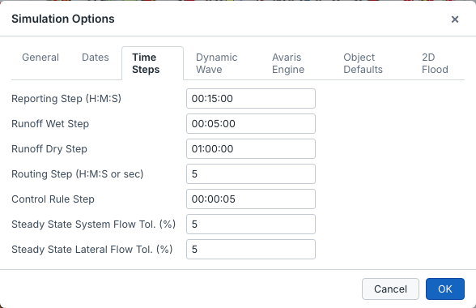
The reporting step decides how many time steps are saved in the results file. It also sets the accuracy of the time functions used by themes and flags: 15 minutes is a good compromise for most storm events.
The dynamic-wave settings are:
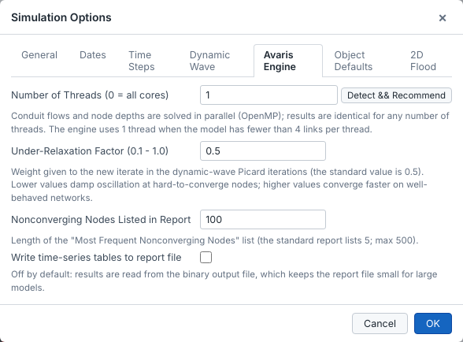
| Setting | Meaning |
|---|---|
| Number of Threads | Conduit flows and node depths are solved in parallel with OpenMP; 0 uses all cores. Detect & Recommend proposes a value for this computer. Results are identical for any number of threads. Models with fewer than 4 links per thread run on one thread. |
| Under-Relaxation Factor | The weight given to the new value in each dynamic-wave iteration (0.1–1.0). The standard value is 0.5. Lower values damp oscillation at hard-to-converge nodes; higher values converge faster on well-behaved networks. |
| Nonconverging Nodes Listed in Report | Length of the "Most Frequent Nonconverging Nodes" list in the report. The standard report lists 5; Avaris lists up to 500. |
| Write time-series tables to report file | Off by default. Results are read from the binary file, which keeps the report small for large models. |
Default values for new nodes, conduits and subcatchments: depths, diameter, roughness, length, area, width, imperviousness and slope. They are saved with your Avaris2 CS settings, not in the model.
The settings of the 1D-2D flood module. See Set up a 2D model.
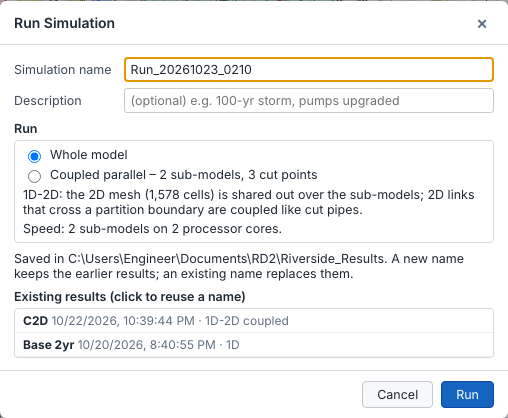
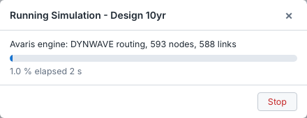
When the run finishes, the results are loaded automatically. The status bar shows the number of reporting steps, and a summary lists the continuity errors, flooding and warnings.
When the model has been partitioned (Model partition, HPS edition), the Run dialog has a Run section: Whole model runs the model as usual, Coupled parallel runs the sub-models at the same time on several processor cores. See Coupled parallel simulation.
Loading results does not start the animation: the map shows the results at the current time, and statistic themes (max. depth, max. capacity) work straight away. Click Simulation ▸ Results ▸ Play to enter play mode and animate the run; click it again to leave play mode.
After a dynamic-wave run, Simulation ▸ Analysis ▸ Convergence lists the nodes where the engine most often failed to converge, with the share of steps not converged and any orifices next to them. It also shows the routing time step summary from the report.
Color Map by Nonconvergence shows on the map where the problem is concentrated, and Select All Listed selects those nodes.
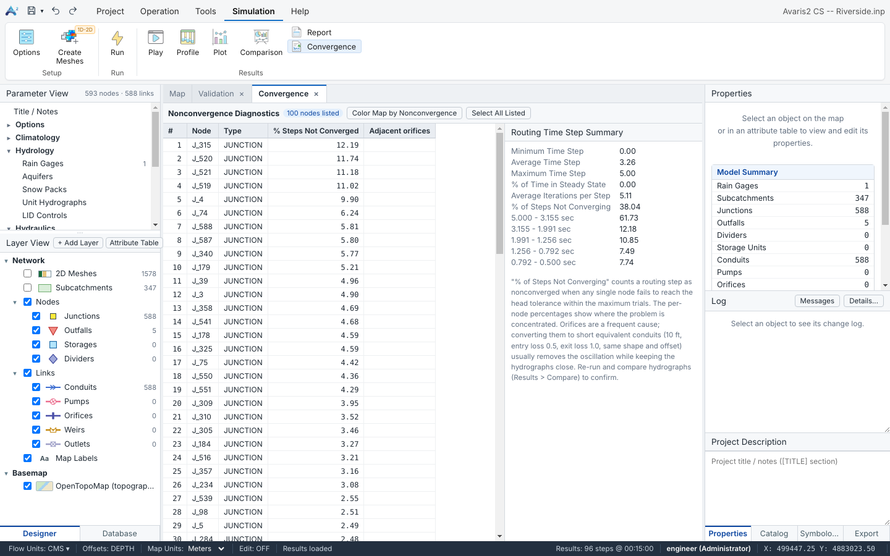
The 2D flood module covers the ground surface with a mesh of square cells, coupled to the manholes of the pipe network. Water that surcharges out of a manhole flows over the surface, following the terrain, and can re-enter the network downstream.
length) and the Manning roughness of the ground (roughness).Link2D is coupled to the cell it lies in..finp) and simulated together with the pipe network by the Avaris engine. The approach is compatible with Avaris DS, so models with 2D settings in the Avaris DS project file (.ini [2D]) are taken over automatically when you open them.Model.mesh2d.json and appears as the 2D Meshes layer, coloured by ground elevation..finp, .frpt and .fout files.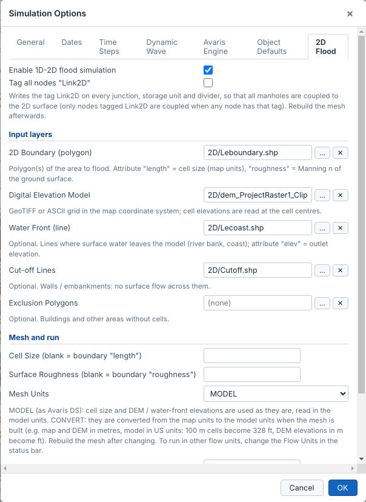
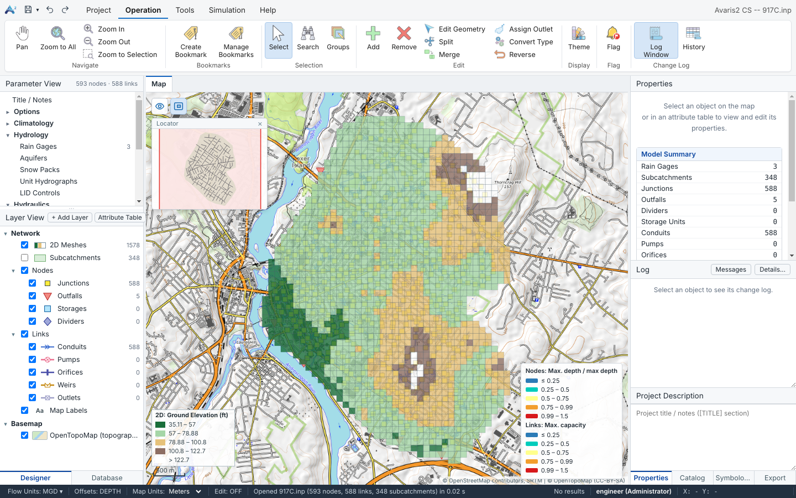
Rebuild the mesh after you change the boundary, DEM, cell size, exclusions or the Link2D tags.
After a 1D-2D run, the 2D Meshes layer shows the flooding on the surface. All 2D statistics (depths, velocities, hazard, times) are calculated from the results file when the results are loaded; you do not need to run again to see a new variable.
Double-click the 2D Meshes layer in the Layer View (or use the Symbology tab on the right) and choose the Variable:
| Variable | Meaning |
|---|---|
| Statistic results (whole run) – available at any time | |
| Max. Depth | Greatest water depth on each cell during the run. |
| Max. Water Surface Elev. | Greatest water level (ground + depth). |
| Max. Velocity | Greatest flow speed over the cell (m/s or ft/s). The velocity of a cell is the average of the velocities through its faces in x and y, combined into one vector. |
| Max. Hazard Rating | Flood hazard to people, HR = d × (v + 0.5) + DF; see Hazard rating. |
| Max. Depth x Velocity | Greatest product of depth and velocity (m²/s or ft²/s), often used for vehicle and building stability. |
| Flood Arrival Time (hr) | When the depth first exceeds the Flood Depth Threshold (Options ▸ 2D Flood). |
| Time of Max. Depth (hr) | When the greatest depth occurs. |
| Time Ponded (hr) | How long the cell is deeper than the Flood Depth Threshold. |
| Time to Recede (hr) | Time from the peak until the depth falls back below the threshold (to the end of the run if it never does). |
| Max. Depth Difference | This run minus the compared run, after a comparison (see 2D Flood Analysis). |
| Current time step – in play mode only | |
| Depth, Water Surface Elev., Velocity, Hazard Rating | The value at the time step shown, animated while playing. |
| Static properties | |
| Ground Elevation | Cell elevation from the DEM. |
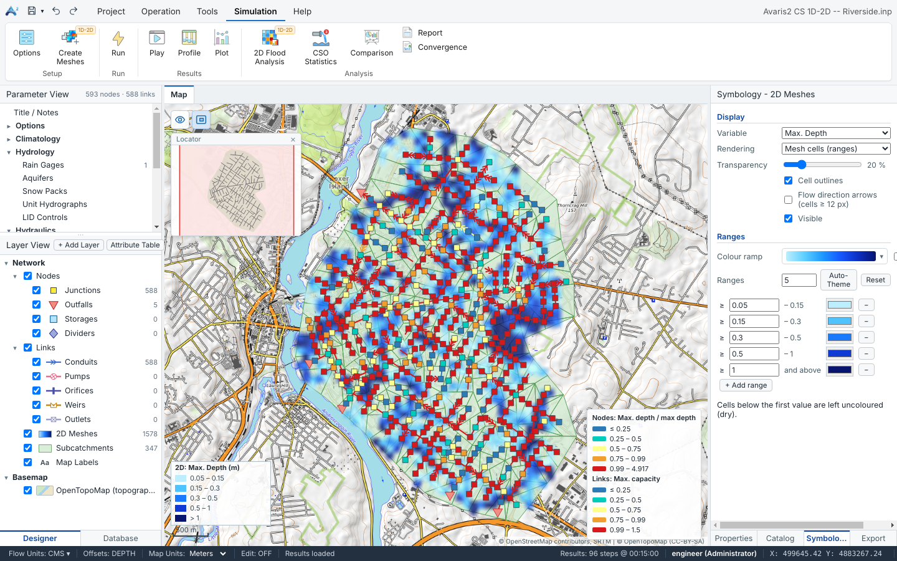
Rendering in the Symbology pane sets how the values are drawn:
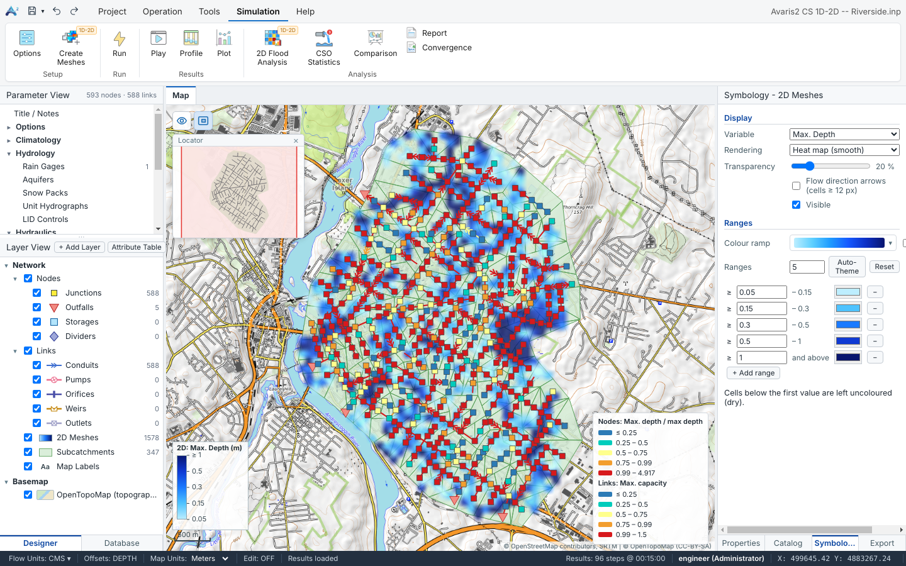
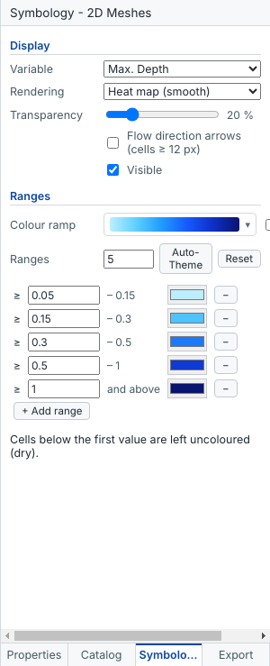
Both renderings use the same ranges and colour ramp: set the number of ranges and click Auto-Theme, or type the values and pick colours one by one; Reset returns to the defaults. Cells below the first value are left uncoloured (dry). Transparency lets the basemap show through.
The hazard rating follows the UK Defra / Environment Agency method (FD2320): HR = d × (v + 0.5) + DF, with the depth d in metres and the velocity v in m/s (US models are converted). The classes are:
| HR | Class | Meaning |
|---|---|---|
| < 0.75 | Low | Caution – flood zone with shallow or slow water. |
| 0.75 – 1.25 | Danger for some | Dangerous for children, the elderly and the infirm. |
| 1.25 – 2.0 | Danger for most | Dangerous for most people, including the general public. |
| > 2.0 | Danger for all | Dangerous for everyone, including the emergency services. |
The debris factor DF is chosen in the Symbology pane when a hazard variable is shown, or in the 2D Flood Analysis: Conservative (0.5 up to 0.25 m depth, 1.0 above; the default), Pasture / arable (0 up to 0.25 m, 0.5 above) or None. Only cells deeper than the Flood Depth Threshold are rated.
Tick Flow direction arrows in the Symbology pane (or right-click the 2D Meshes layer ▸ Flow Direction Arrows). Arrows point in the flow direction and grow with the speed. They are drawn on cells at least 12 pixels wide, so zoom in to see them. Outside play mode they show the direction at the maximum velocity; in play mode, the current flow.
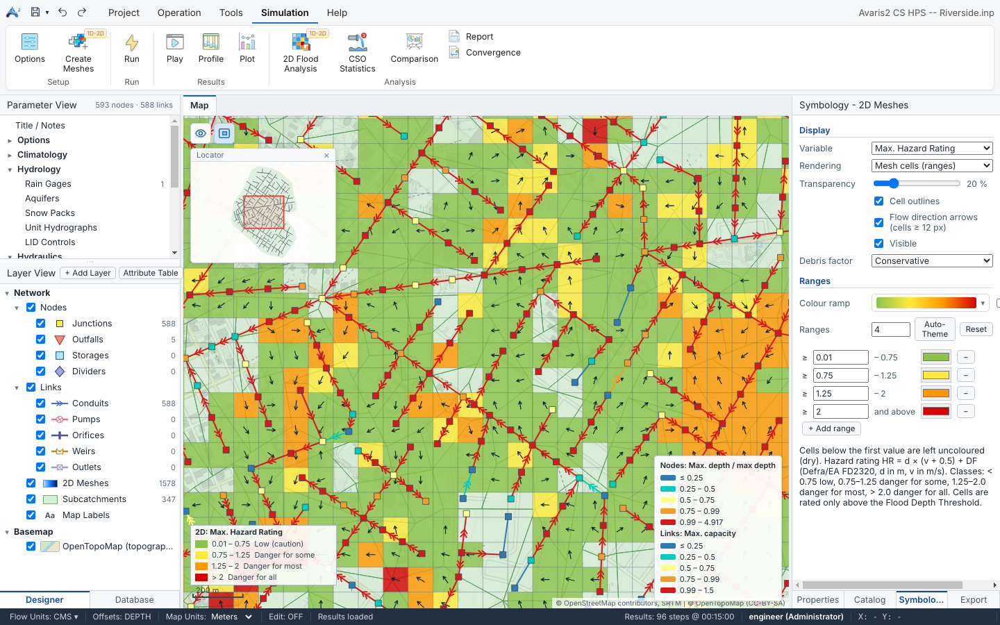
Hover over a cell to read its values. Click a cell: Properties lists all its statistics (ground level, max. depth, velocity, hazard, arrival time…). Click 2D Cell Graph there for three linked graphs over time – depth (with the flood threshold), velocity and hazard rating (with the 0.75 / 1.25 / 2.0 class lines). Drag to zoom, double-click to reset.
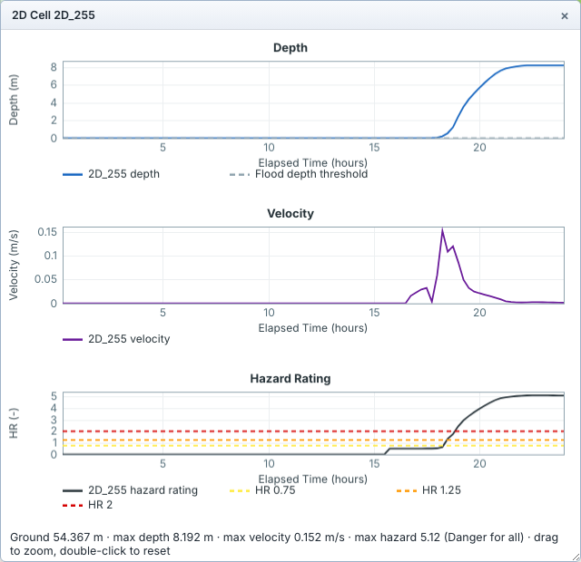
Right-click the 2D Meshes layer for:
Simulation ▸ Analysis ▸ 2D Flood Analysis (1D-2D edition) summarises the flooding of the loaded 1D-2D run: how much area floods, how deep and how dangerous, where, and how it changes between two runs.
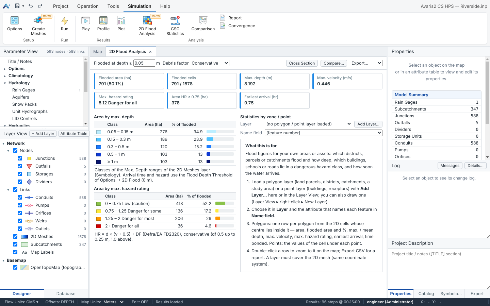
Flooded at depth ≥ sets the depth from which a cell counts as flooded (default: the Flood Depth Threshold). The cards then show the flooded area (and the share of the mesh), flooded cells, max. depth, max. velocity, max. hazard rating with its class, the area with HR ≥ 0.75 and the earliest arrival time. Debris factor changes the hazard rating everywhere.
Area by max. depth uses the ranges of the 2D Meshes layer (change them in Symbology), and Area by max. hazard rating uses the four Defra classes. Each row gives the area and the share of the flooded area.
Use your own areas or assets to report the flooding: districts, land parcels, catchments, buildings, schools, roads.
The table refreshes by itself when a layer is added or removed.
.fout file). Cells are matched by ID.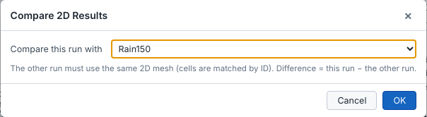
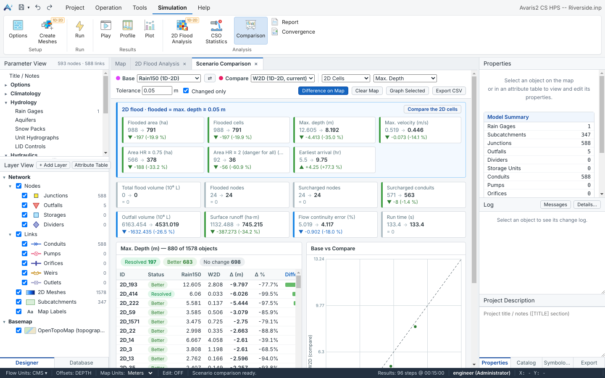
Click Cross Section (or right-click the 2D Meshes layer ▸ 2D Cross Section), then click the vertices of a line on the map; double-click or press Enter to finish, Esc to cancel. The graph shows the ground and the max. water surface along the line (and of the compared run, if any); in play mode also the current water surface. Gaps are outside the mesh.
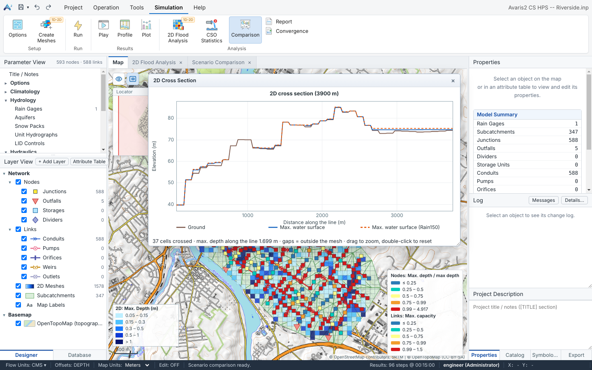
| Export | Where | Result |
|---|---|---|
| Flood extent | Export ▸ Flood extent (shapefile), or the 2D Meshes layer menu | Polygon shapefile: the flooded cells merged into polygons, with their area. Uses Flooded at depth ≥. |
| Depth classes / Hazard classes | Export ▸ Depth classes / Hazard classes (shapefile) | One polygon feature per class, with class name and area. |
| Max. depth grid | 2D Meshes layer ▸ Export Max. Depth (GeoTIFF)… | GeoTIFF, 32-bit float, no data = −9999, with .tfw, .prj and .aux.xml (coordinate system). |
| Grid of any variable | 2D Meshes layer ▸ Export Raster of a Field… (GeoTIFF), or Export ▸ Raster grid of a field (ESRI ASCII grid, .asc) | The variable shown on the 2D Meshes layer. |
| Cell results | Export ▸ Cell results (CSV) | One row per cell with all statistics. |
Grids use the smallest cell size of the mesh as the pixel size; larger cells fill several pixels. All exports carry the model's coordinate system, so they line up in ArcGIS, QGIS or AutoCAD Map.